Teoría de probabilidades
dgonzalez

Funciones para modelos discretos
En R, las funciones asociadas con los principales modelos de probabilidad se identifican mediante una letra inicial que indica el tipo de cálculo que se desea realizar.
- d: calcula la función de probabilidad \(f(x)=P(X=x)\).
- p: calcula la función de distribución acumulada \(F(x)=P(X\leq x)\).
- q: calcula cuantiles o percentiles \(x_p\).
- r: genera números aleatorios de la distribución especificada.
Por ejemplo, para una distribución binomial se utilizan las funciones
dbinom(), pbinom(), qbinom() y
rbinom().
| Modelo | \(f(x)\) | \(F(x)\) | \(x_p\) | Aleatorio |
|---|---|---|---|---|
| Bernoulli | dbinom |
pbinom |
qbinom |
rbinom |
| Binomial | dbinom |
pbinom |
qbinom |
rbinom |
| Poisson | dpois |
ppois |
qpois |
rpois |
| Geométrico | dgeom |
pgeom |
qgeom |
rgeom |
| Hipergeométrico | dhyper |
phyper |
qhyper |
rhyper |
| Binomial negativo | dnbinom |
pnbinom |
qnbinom |
rnbinom |
Cuando no se recuerde la sintaxis de una función puede consultarse la ayuda de R. Por ejemplo:
help("dbinom")
help("pbinom")
?dpoisDistribución Bernoulli
Una variable aleatoria Bernoulli solamente puede tomar los valores \(0\) y \(1\). Se puede representar como
\[ X\sim Bernoulli(p) \]
donde \(p=P(X=1)\) es la probabilidad de éxito y \(1-p=P(X=0)\) es la probabilidad de fracaso.
En R no existe una función denominada
dbern(). La distribución Bernoulli se trabaja como un caso
particular de la distribución binomial con un solo ensayo, es decir,
size = 1.
Supongamos que
\[ X\sim Bernoulli(0.70). \]
Se realizarán los siguientes procesos:
- Calcular \(P(X=1)\).
- Calcular \(P(X=0)\).
- Construir la tabla de \(f(x)\) y \(F(x)\).
- Calcular un cuantil.
- Generar 15 observaciones aleatorias.
- Representar gráficamente \(f(x)\) y \(F(x)\).
Función de probabilidad
# P(X = 1)
dbinom(1, size = 1, prob = 0.70)[1] 0.7# P(X = 0)
dbinom(0, size = 1, prob = 0.70)[1] 0.3Función de distribución acumulada
# P(X <= 0)
pbinom(0, size = 1, prob = 0.70)[1] 0.3# P(X <= 1)
pbinom(1, size = 1, prob = 0.70)[1] 1Tabla
x <- 0:1
fx <- dbinom(x, size = 1, prob = 0.70)
Fx <- pbinom(x, size = 1, prob = 0.70)
data.frame(
x = x,
fx = round(fx, 4),
Fx = round(Fx, 4)
) x fx Fx
1 0 0.3 0.3
2 1 0.7 1.0Cuantil
# Percentil 50
qbinom(0.50, size = 1, prob = 0.70)[1] 1Generación de números aleatorios
# Genera 15 resultados Bernoulli
set.seed(123)
rbinom(15, size = 1, prob = 0.70) [1] 1 0 1 0 0 1 1 0 1 1 0 1 1 1 1Gráfica de la función de distribución de probabilidad
x <- 0:1
plot(
x,
dbinom(x, size = 1, prob = 0.70),
pch = 19,
las = 1,
xlab = "x",
ylab = "f(x)",
col = c31,
ylim = c(0, 1)
)
grid()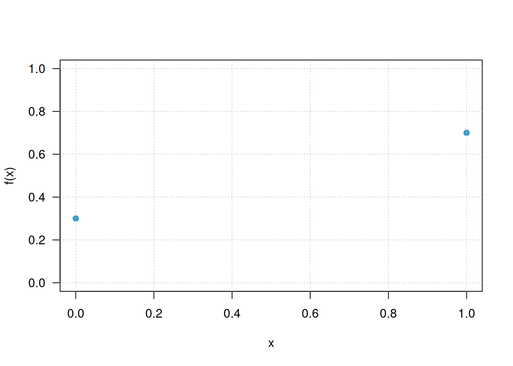
Gráfica de función acumulada
plot(
x,
pbinom(x, size = 1, prob = 0.70),
type = "s",
pch = 19,
las = 1,
xlab = "x",
ylab = "F(x)",
col = c31,
ylim = c(0, 1)
)
grid()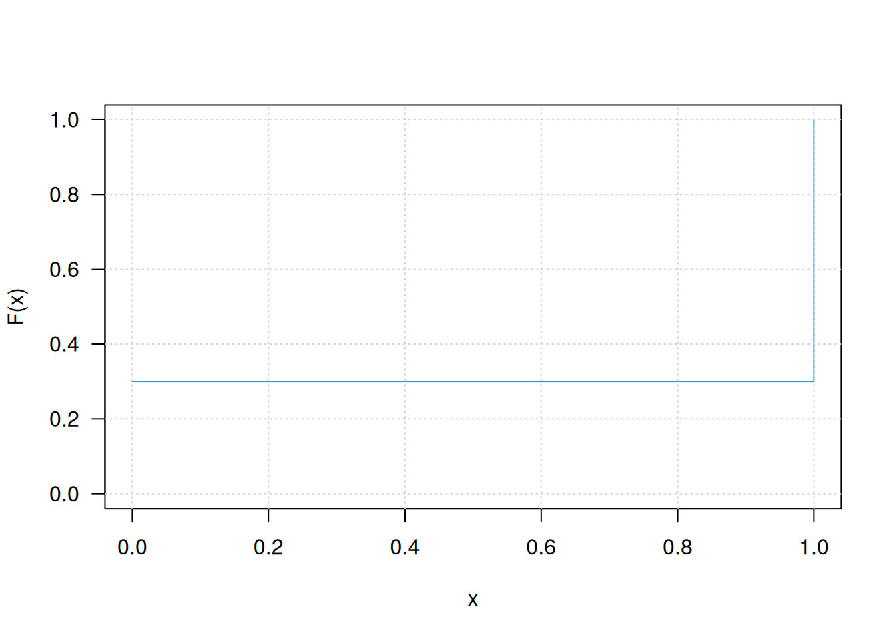
Distribución binomial
La distribución binomial permite modelar el número de éxitos obtenidos en \(n\) ensayos Bernoulli independientes, cuando la probabilidad de éxito \(p\) permanece constante.
Supongamos
\[ X\sim Binomial(20,0.30). \]
En este caso se realizarán los siguientes procesos:
- Calcular \(P(X=7)\).
- Calcular \(P(X\leq 7)\).
- Calcular \(P(X>7)\).
- Construir la tabla de \(f(x)\) y \(F(x)\).
- Calcular un percentil.
- Generar 15 números aleatorios.
- Construir las gráficas de \(f(x)\) y \(F(x)\).
Función de probabilidad
# P(X = 7)
dbinom(7, size = 20, prob = 0.30)[1] 0.164262Probabilidad acumulada
# P(X <= 7)
pbinom(7, size = 20, prob = 0.30)[1] 0.7722718Probabilidad de cola superior
# P(X > 7)
pbinom(7, size = 20, prob = 0.30, lower.tail = FALSE)[1] 0.2277282Tabla
x <- 0:20
fx <- dbinom(x, size = 20, prob = 0.30)
Fx <- pbinom(x, size = 20, prob = 0.30)
data.frame(
x = x,
fx = round(fx, 4),
Fx = round(Fx, 4)
) x fx Fx
1 0 0.0008 0.0008
2 1 0.0068 0.0076
3 2 0.0278 0.0355
4 3 0.0716 0.1071
5 4 0.1304 0.2375
6 5 0.1789 0.4164
7 6 0.1916 0.6080
8 7 0.1643 0.7723
9 8 0.1144 0.8867
10 9 0.0654 0.9520
11 10 0.0308 0.9829
12 11 0.0120 0.9949
13 12 0.0039 0.9987
14 13 0.0010 0.9997
15 14 0.0002 1.0000
16 15 0.0000 1.0000
17 16 0.0000 1.0000
18 17 0.0000 1.0000
19 18 0.0000 1.0000
20 19 0.0000 1.0000
21 20 0.0000 1.0000Cuantil
# Percentil 90
qbinom(0.90, size = 20, prob = 0.30)[1] 9Generación de números aleatorios
set.seed(123)
# Genera 15 observaciones de X
rbinom(15, size = 20, prob = 0.30) [1] 5 8 5 8 9 3 6 9 6 6 10 6 7 6 3Gráfica de la función de distribución de probabilidad
x <- 0:20
plot(
x,
dbinom(x, size = 20, prob = 0.30),
pch = 19,
las = 1,
xlab = "x",
ylab = "f(x)",
col = c31
)
grid()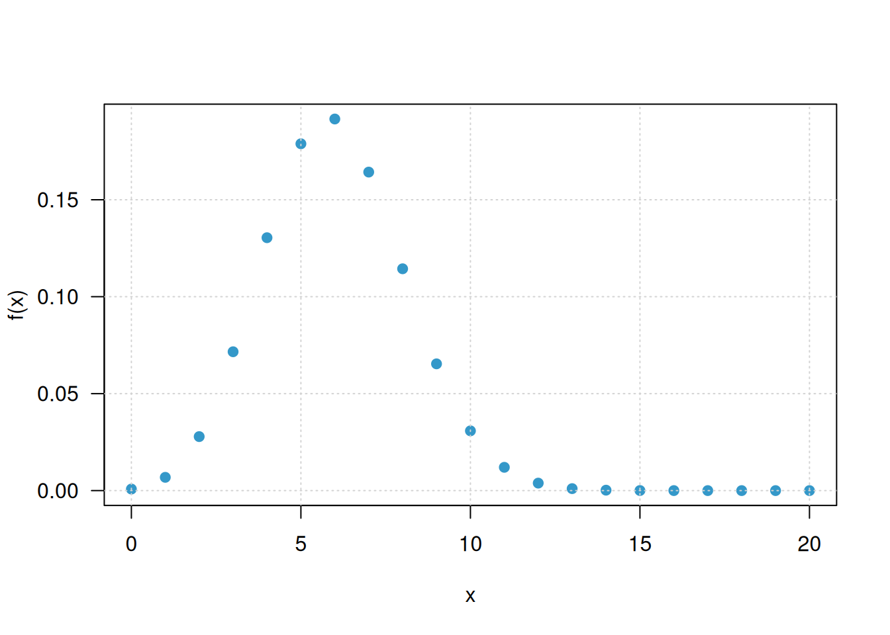
Gráfica de la función de probabilidad acumulada
plot(
x,
pbinom(x, size = 20, prob = 0.30),
type = "s",
pch = 19,
las = 1,
xlab = "x",
ylab = "F(x)",
col = c31
)
grid()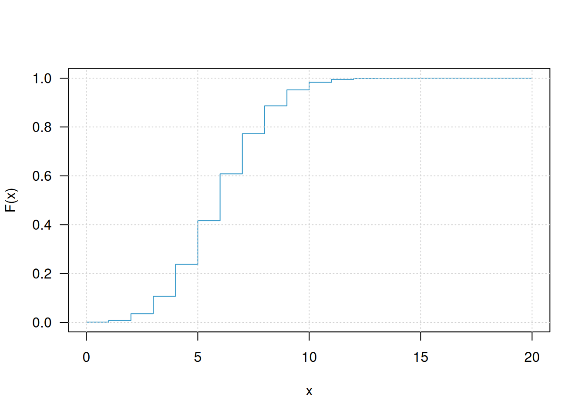
Distribución Poisson
La distribución Poisson se utiliza para modelar el número de ocurrencias de un evento en un intervalo determinado. Su parámetro es \(\lambda\), que representa el número promedio de ocurrencias en dicho intervalo.
Supongamos
\[ X\sim Poisson(4). \]
Como la distribución Poisson tiene soporte infinito, para construir tablas y gráficas se seleccionará un rango suficientemente amplio de valores de \(x\).
Función de probabilidad
# P(X = 5)
dpois(5, lambda = 4)[1] 0.1562935Probabilidad acumulada
# P(X <= 5)
ppois(5, lambda = 4)[1] 0.7851304Probabilidad de cola superior
# P(X > 5)
ppois(5, lambda = 4, lower.tail = FALSE)[1] 0.2148696Tabla
# Se muestran valores entre 0 y 15
x <- 0:15
fx <- dpois(x, lambda = 4)
Fx <- ppois(x, lambda = 4)
data.frame(
x = x,
fx = round(fx, 4),
Fx = round(Fx, 4)
) x fx Fx
1 0 0.0183 0.0183
2 1 0.0733 0.0916
3 2 0.1465 0.2381
4 3 0.1954 0.4335
5 4 0.1954 0.6288
6 5 0.1563 0.7851
7 6 0.1042 0.8893
8 7 0.0595 0.9489
9 8 0.0298 0.9786
10 9 0.0132 0.9919
11 10 0.0053 0.9972
12 11 0.0019 0.9991
13 12 0.0006 0.9997
14 13 0.0002 0.9999
15 14 0.0001 1.0000
16 15 0.0000 1.0000Cuantil
# Percentil 95
qpois(0.95, lambda = 4)[1] 8Generación de números aleatorios
set.seed(123)
# Genera 15 observaciones Poisson
rpois(15, lambda = 4) [1] 3 6 3 6 7 1 4 7 4 4 8 4 5 4 2Gráfica de la función de distribución de probabilidad
x <- 0:15
plot(
x,
dpois(x, lambda = 4),
pch = 19,
las = 1,
xlab = "x",
ylab = "f(x)",
col = c31
)
grid()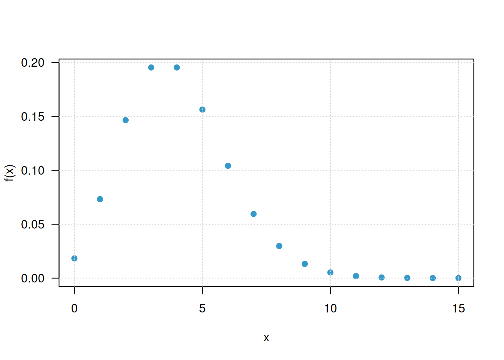
Gráfica de la función de probabilidad acumulada
plot(
x,
ppois(x, lambda = 4),
type = "s",
pch = 19,
las = 1,
xlab = "x",
ylab = "F(x)",
col = c31
)
grid()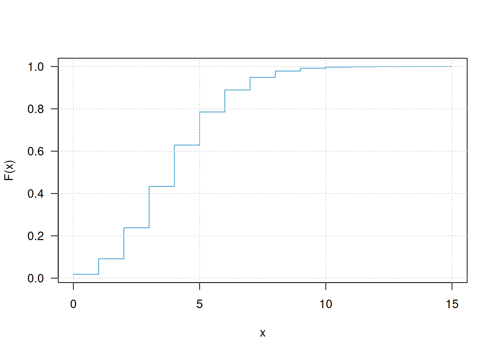
Distribución geométrica
La distribución geométrica modela el número de fracasos que ocurren antes de obtener el primer éxito.
Importante: esta es la parametrización utilizada por R. Por esta razón, la variable toma los valores
\[ X=0,1,2,\ldots \]
El valor \(X=0\) significa que el primer ensayo produjo inmediatamente un éxito.
Supongamos
\[ X\sim Geométrica(0.25). \]
Función de distribución de probabilidad
# P(X = 3)
# Probabilidad de tener 3 fracasos antes del primer éxito
dgeom(3, prob = 0.25)[1] 0.1054688Probabilidad acumulada
# P(X <= 3)
pgeom(3, prob = 0.25)[1] 0.6835938Probabilidad de cola superior
# P(X > 3)
pgeom(3, prob = 0.25, lower.tail = FALSE)[1] 0.3164063Tabla
# Se muestran los primeros valores de la distribución
x <- 0:15
fx <- dgeom(x, prob = 0.25)
Fx <- pgeom(x, prob = 0.25)
data.frame(
x = x,
fx = round(fx, 4),
Fx = round(Fx, 4)
) x fx Fx
1 0 0.2500 0.2500
2 1 0.1875 0.4375
3 2 0.1406 0.5781
4 3 0.1055 0.6836
5 4 0.0791 0.7627
6 5 0.0593 0.8220
7 6 0.0445 0.8665
8 7 0.0334 0.8999
9 8 0.0250 0.9249
10 9 0.0188 0.9437
11 10 0.0141 0.9578
12 11 0.0106 0.9683
13 12 0.0079 0.9762
14 13 0.0059 0.9822
15 14 0.0045 0.9866
16 15 0.0033 0.9900Cuantil
# Percentil 90
qgeom(0.90, prob = 0.25)[1] 8Generación de números aleatorios
set.seed(123)
# Número de fracasos antes del primer éxito
rgeom(15, prob = 0.25) [1] 4 6 0 0 1 12 7 1 1 1 2 11 2 3 2Gráfica de la función de distribución de probabilidad
x <- 0:15
plot(
x,
dgeom(x, prob = 0.25),
pch = 19,
las = 1,
xlab = "Número de fracasos",
ylab = "f(x)",
col = c31
)
grid()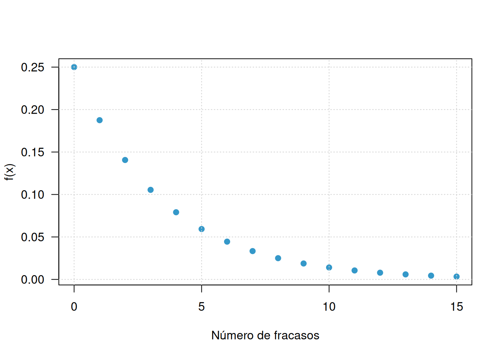
Gráfica de la función de probabilidad acumulada
plot(
x,
pgeom(x, prob = 0.25),
type = "s",
pch = 19,
las = 1,
xlab = "Número de fracasos",
ylab = "F(x)",
col = c31
)
grid()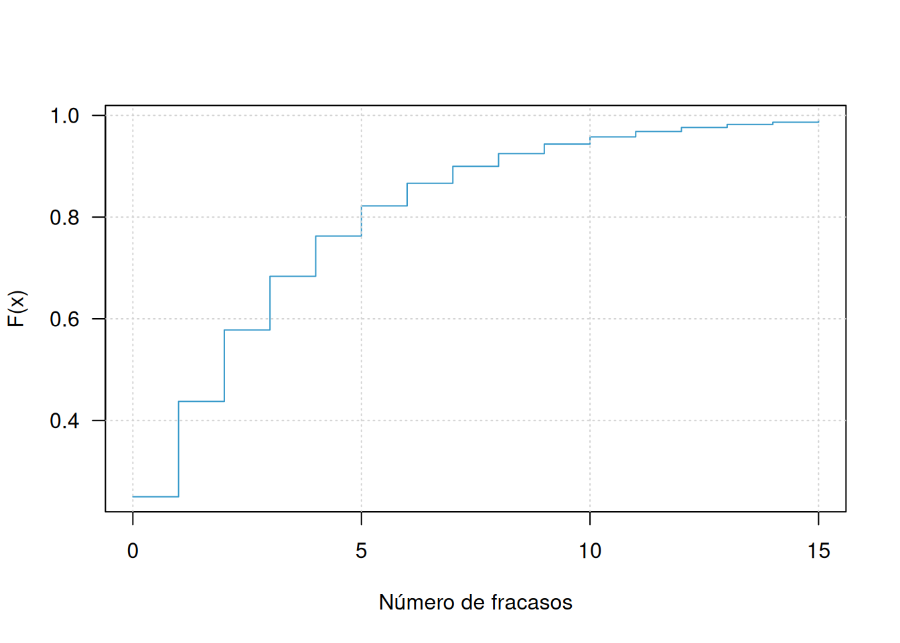
Distribución hipergeométrica
La distribución hipergeométrica se utiliza cuando se selecciona una muestra sin reemplazo de una población finita que contiene dos tipos de elementos.
En las funciones de R:
m: número de elementos considerados éxitos en la población.n: número de elementos considerados fracasos en la población.k: tamaño de la muestra.x: número de éxitos observados en la muestra.
Supongamos una población con 8 elementos tipo éxito y 12 tipo fracaso, de la cual se seleccionan 5 elementos sin reemplazo.
\[ X\sim Hipergeométrica(m=8,n=12,k=5). \]
Función de distribución de probabilidad
# P(X = 2)
dhyper(2, m = 8, n = 12, k = 5)[1] 0.3973168Probabilidad acumulada
# P(X <= 2)
phyper(2, m = 8, n = 12, k = 5)[1] 0.7038184Probabilidad de cola superior
# P(X > 2)
phyper(2, m = 8, n = 12, k = 5, lower.tail = FALSE)[1] 0.2961816Rango posible de la variable
El rango de una variable hipergeométrica depende de los parámetros de la población y del tamaño de muestra. Se puede obtener mediante:
m <- 8
n <- 12
k <- 5
xmin <- max(0, k - n)
xmax <- min(k, m)
x <- xmin:xmax
x[1] 0 1 2 3 4 5Tabla
fx <- dhyper(x, m = m, n = n, k = k)
Fx <- phyper(x, m = m, n = n, k = k)
data.frame(
x = x,
fx = round(fx, 4),
Fx = round(Fx, 4)
) x fx Fx
1 0 0.0511 0.0511
2 1 0.2554 0.3065
3 2 0.3973 0.7038
4 3 0.2384 0.9422
5 4 0.0542 0.9964
6 5 0.0036 1.0000Cuantil
# Percentil 90
qhyper(0.90, m = 8, n = 12, k = 5)[1] 3Generación de números aleatorios
set.seed(123)
# Genera 15 muestras y registra el número de éxitos
rhyper(15, m = 8, n = 12, k = 5) [1] 1 3 2 3 3 0 2 3 2 2 4 2 2 2 1Gráfica de la función de distribución de probabilidad
plot(
x,
dhyper(x, m = m, n = n, k = k),
pch = 19,
las = 1,
xlab = "x",
ylab = "f(x)",
col = c31
)
grid()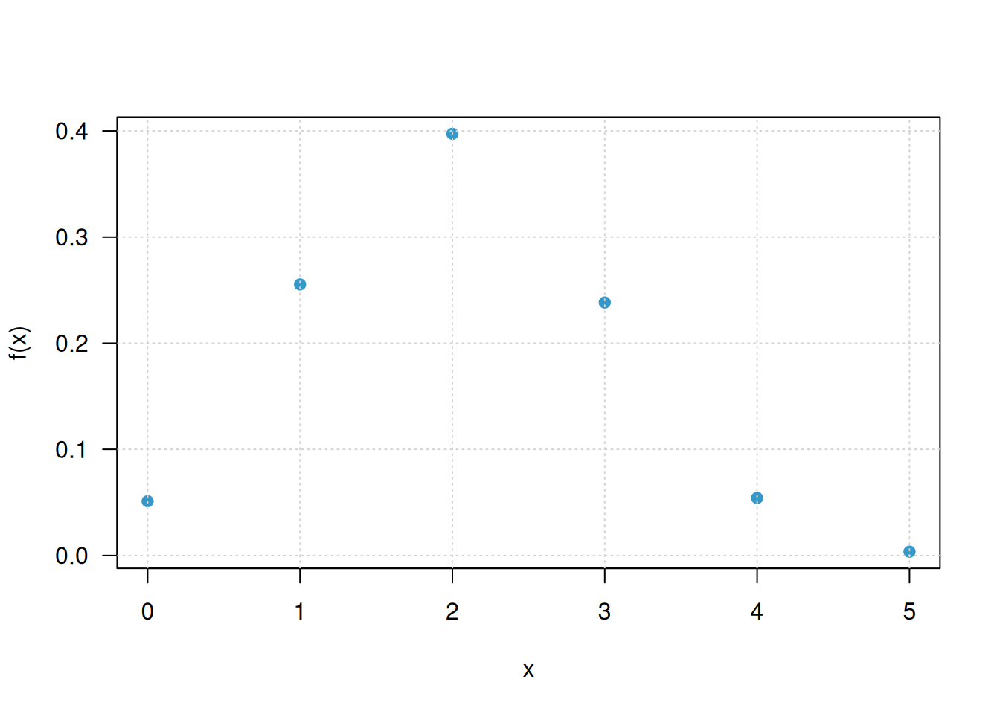
Gráfica de la función de probabilidad acumulada
plot(
x,
phyper(x, m = m, n = n, k = k),
type = "s",
pch = 19,
las = 1,
xlab = "x",
ylab = "F(x)",
col = c31
)
grid()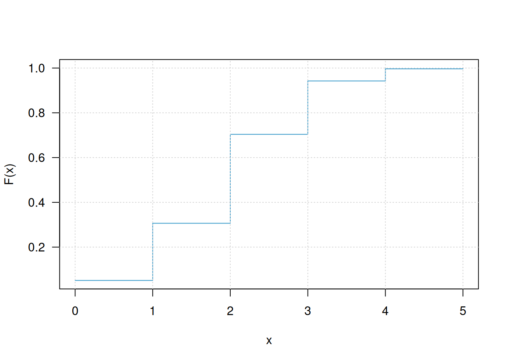
Distribución binomial negativa
La distribución binomial negativa permite modelar el número de fracasos que ocurren antes de alcanzar un número determinado de éxitos.
En R, el parámetro size representa el
número de éxitos que se desean alcanzar y prob representa
la probabilidad de éxito en cada ensayo.
Supongamos que se desean alcanzar 4 éxitos y que la probabilidad de éxito en cada ensayo es 0.40:
\[ X\sim BN(size=4,p=0.40). \]
En esta parametrización, \(X\) representa el número de fracasos antes de obtener el cuarto éxito.
Función de distribución de probabilidad
# P(X = 5)
# Probabilidad de tener 5 fracasos antes de alcanzar 4 éxitos
dnbinom(5, size = 4, prob = 0.40)[1] 0.1114767Probabilidad acumulada
# P(X <= 5)
pnbinom(5, size = 4, prob = 0.40)[1] 0.5173903Probabilidad de cola superior
# P(X > 5)
pnbinom(5, size = 4, prob = 0.40, lower.tail = FALSE)[1] 0.4826097Tabla
# La distribución tiene soporte infinito.
# Para la tabla se seleccionan los valores de 0 a 25.
x <- 0:25
fx <- dnbinom(x, size = 4, prob = 0.40)
Fx <- pnbinom(x, size = 4, prob = 0.40)
data.frame(
x = x,
fx = round(fx, 4),
Fx = round(Fx, 4)
) x fx Fx
1 0 0.0256 0.0256
2 1 0.0614 0.0870
3 2 0.0922 0.1792
4 3 0.1106 0.2898
5 4 0.1161 0.4059
6 5 0.1115 0.5174
7 6 0.1003 0.6177
8 7 0.0860 0.7037
9 8 0.0709 0.7747
10 9 0.0568 0.8314
11 10 0.0443 0.8757
12 11 0.0338 0.9095
13 12 0.0254 0.9349
14 13 0.0187 0.9536
15 14 0.0136 0.9672
16 15 0.0098 0.9770
17 16 0.0070 0.9840
18 17 0.0049 0.9890
19 18 0.0035 0.9924
20 19 0.0024 0.9948
21 20 0.0017 0.9965
22 21 0.0011 0.9976
23 22 0.0008 0.9984
24 23 0.0005 0.9989
25 24 0.0004 0.9993
26 25 0.0002 0.9995Cuantil
# Percentil 95
qnbinom(0.95, size = 4, prob = 0.40)[1] 13Generación de números aleatorios
set.seed(123)
# Número de fracasos antes de alcanzar 4 éxitos
rnbinom(15, size = 4, prob = 0.40) [1] 6 10 10 2 5 5 7 7 6 2 4 3 3 2 5Gráfica de la función de distribución acumulada
x <- 0:25
plot(
x,
dnbinom(x, size = 4, prob = 0.40),
pch = 19,
las = 1,
xlab = "Número de fracasos",
ylab = "f(x)",
col = c31
)
grid()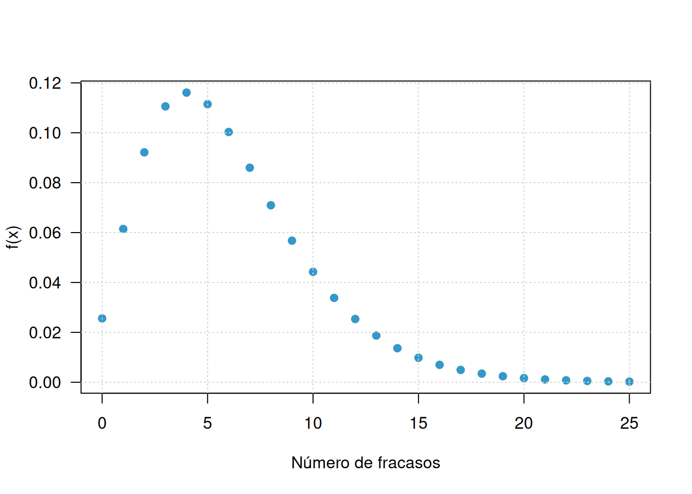
Gráfica de la función de probabilidad acumulada
plot(
x,
pnbinom(x, size = 4, prob = 0.40),
type = "s",
pch = 19,
las = 1,
xlab = "Número de fracasos",
ylab = "F(x)",
col = c31
)
grid()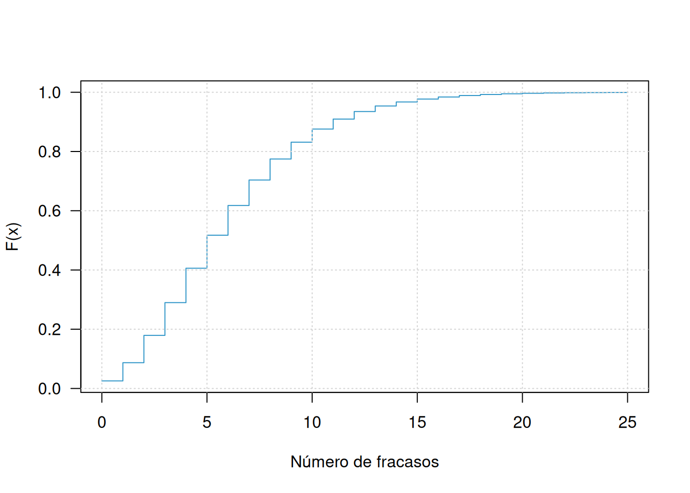
Resumen de sintaxis
La siguiente sección permite consultar rápidamente la sintaxis básica de las funciones utilizadas.
# ============================================================
# BERNOULLI
# Se implementa como Binomial(size = 1)
# ============================================================
dbinom(x, size = 1, prob = p)
pbinom(q, size = 1, prob = p)
qbinom(p, size = 1, prob = p)
rbinom(n, size = 1, prob = p)
# ============================================================
# BINOMIAL
# ============================================================
dbinom(x, size, prob)
pbinom(q, size, prob, lower.tail = TRUE)
qbinom(p, size, prob, lower.tail = TRUE)
rbinom(n, size, prob)
# ============================================================
# POISSON
# ============================================================
dpois(x, lambda)
ppois(q, lambda, lower.tail = TRUE)
qpois(p, lambda, lower.tail = TRUE)
rpois(n, lambda)
# ============================================================
# GEOMÉTRICA
# X = número de fracasos antes del primer éxito
# ============================================================
dgeom(x, prob)
pgeom(q, prob, lower.tail = TRUE)
qgeom(p, prob, lower.tail = TRUE)
rgeom(n, prob)
# ============================================================
# HIPERGEOMÉTRICA
# m = éxitos en la población
# n = fracasos en la población
# k = tamaño de muestra
# ============================================================
dhyper(x, m, n, k)
phyper(q, m, n, k, lower.tail = TRUE)
qhyper(p, m, n, k, lower.tail = TRUE)
rhyper(nn, m, n, k)
# ============================================================
# BINOMIAL NEGATIVA
# X = fracasos antes de alcanzar 'size' éxitos
# ============================================================
dnbinom(x, size, prob)
pnbinom(q, size, prob, lower.tail = TRUE)
qnbinom(p, size, prob, lower.tail = TRUE)
rnbinom(n, size, prob)